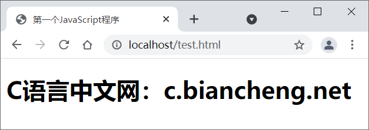
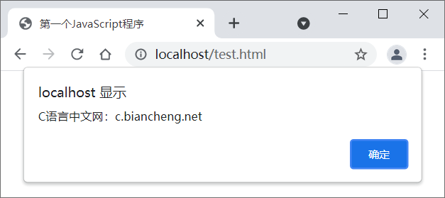

首页 > JavaScript
第一个JavaScript程序
JavaScript 程序不能够独立运行，只能在宿主环境中执行。一般情况下可以把 JavaScript 代码放在网页中，借助浏览器环境来运行。
第1步，新建 HTML 文档，保存为 test.html。
第2步，在 <head> 标签内插入一个 <script> 标签。
第3步，为 <script> 标签设置
第5步，保存网页文档，在浏览器中预览，显示效果如图所示。
常用的文本编辑器有 Windows 系统中的记事本、Linux 系统中的 Vim、Sublime Text、Notepad++ 等。对于初学者来说，建议先使用文本编辑器来编写 JavaScript 代码，这样有助于我们对 JavaScript 语法、关键字、函数等内容的记忆。等到了实际开发阶段，则可以选择一些更加专业的代码编辑器，例如 Visual Studio Code（简称“VS Code”）、WebStorm（收费）、Atom 等，这样可以提高开发效率。
新建 JavaScript 文件的步骤如下。
第1步，新建文本文件，保存为 test.js。注意，扩展名为
第2步，打开 test.js 文件，在其中编写如下 JavaScript 代码。
第3步，保存 JavaScript 文件。在此建议把 JavaScript 文件和网页文件放在同一个目录下。
JavaScript 文件不能够独立运行，需要导入到网页中，通过浏览器来执行。使用 <script> 标签可以导入 JavaScript 文件。
第4步，新建 HTML 文档，保存为 test.html。
第5步，在 <head> 标签内插入一个 <script> 标签。定义 src 属性，设置属性值为指向外部 JavaScript 文件的 URL 字符串。代码如下：
第6步，保存网页文档，在浏览器中预览，显示效果如图所示。
定义 src 属性的 <script> 标签不应再包含 JavaScript 代码。如果嵌入了代码，则只会下载并执行外部 JavaScript 文件，嵌入代码将被忽略。
你看，对于导入的 JavaScript 文件，也将按照 ＜script> 标签在文档中出现的顺序来执行，而且执行过程是文档解析的一部分，不会单独解析或者延期执行。
如果想改变 JavaScript 文件的执行顺序，可以给 <script> 标签增加 defer 或者 async 属性，想了解的读者请转到：JS文件延迟和异步加载（defer和async属性）
在 HTML 文档中嵌入 JavaScript 代码
在 HTML 页面中嵌入 JavaScript 脚本需要使用 <script> 标签，用户可以在 <script> 标签中直接编写 JavaScript 代码，具体步骤如下。第1步，新建 HTML 文档，保存为 test.html。
第2步，在 <head> 标签内插入一个 <script> 标签。
第3步，为 <script> 标签设置
type="text/javascript"属性。
现代浏览器默认 <script> 标签的脚本类型为 JavaScript，因此可以省略 type 属性；如果考虑到兼容早期版本浏览器，则需要设置 type 属性。
第4步，在 <script> 标签内输入 JavaScript 代码document.write("<h1>C语言中文网：c.biancheng.net</h1>");。
<!DOCTYPE html>
<html>
<head>
<meta charset="UTF-8">
<title>第一个JavaScript程序</title>
<script type="text/javascript">
document.write("<h1>C语言中文网：c.biancheng.net</h1>");
</script>
</head>
<body></body>
</html>
在 JavaScript 脚本中，document 表示网页文档对象；document.write() 表示调用 Document 对象的 write() 方法，在当前网页源代码中写入 HTML 字符串"<h1>C语言中文网：c.biancheng.net</h1>"。第5步，保存网页文档，在浏览器中预览，显示效果如图所示。

在脚本文件中编写 JavaScript 代码
JavaScript 程序不仅可以直接放在 HTML 文档中，也可以放在 JavaScript 脚本文件中。JavaScript 脚本文件是文本文件，扩展名为.js，使用任何文本编辑器都可以编辑。常用的文本编辑器有 Windows 系统中的记事本、Linux 系统中的 Vim、Sublime Text、Notepad++ 等。对于初学者来说，建议先使用文本编辑器来编写 JavaScript 代码，这样有助于我们对 JavaScript 语法、关键字、函数等内容的记忆。等到了实际开发阶段，则可以选择一些更加专业的代码编辑器，例如 Visual Studio Code（简称“VS Code”）、WebStorm（收费）、Atom 等，这样可以提高开发效率。
新建 JavaScript 文件的步骤如下。
第1步，新建文本文件，保存为 test.js。注意，扩展名为
.js，它表示该文本文件是 JavaScript 类型的文件。第2步，打开 test.js 文件，在其中编写如下 JavaScript 代码。
alert("C语言中文网：c.biancheng.net");
在上面代码中，alert() 表示 Window 对象的方法，调用该方法将弹出一个提示对话框，显示参数字符串 "Hi, JavaScript!"。第3步，保存 JavaScript 文件。在此建议把 JavaScript 文件和网页文件放在同一个目录下。
JavaScript 文件不能够独立运行，需要导入到网页中，通过浏览器来执行。使用 <script> 标签可以导入 JavaScript 文件。
第4步，新建 HTML 文档，保存为 test.html。
第5步，在 <head> 标签内插入一个 <script> 标签。定义 src 属性，设置属性值为指向外部 JavaScript 文件的 URL 字符串。代码如下：
<script type="text/javascript" src="test.js"></script>注意：使用＜script＞标签包含外部 JavaScript 文件时，默认文件类型为 Javascript。因此，不管加载的文件扩展名是不是 .js，浏览器都会按 JavaScript 脚本来解析。
第6步，保存网页文档，在浏览器中预览，显示效果如图所示。

定义 src 属性的 <script> 标签不应再包含 JavaScript 代码。如果嵌入了代码，则只会下载并执行外部 JavaScript 文件，嵌入代码将被忽略。
JavaScript 代码执行顺序
浏览器在解析 HTML 文档时，将根据文档流从上到下逐行解析和显示。JavaScript 代码也是 HTML 文档的组成部分，因此 JavaScript 脚本的执行顺序也是根据 <script> 标签的位置来确定的。示例
使用浏览器测试下面示例，会看到 JavaScript 代码从上到下逐步被解析的过程。
<!DOCTYPE html>
<script>
alert("顶部脚本");
</script>
<html>
<head>
<meta charset="UTF-8">
<title>test</title>
<script>
alert("头部脚本");
</script>
</head>
<body>
<h1>网页标题</h1>
<script>
alert("页面脚本");
</script>
<p>正文内容</p>
</body>
<script>
alert("底部脚本");
</script>
</html>
在浏览器中浏览上面示例网页，首先弹出提示文本“顶部脚本”，然后显示网页标题“test”，接着弹出提示文本“头部脚本”，下面才显示一级标题文本“网页标题”，继续弹出提示文本“页面脚本”， 接着显示段落文本“正文内容”，最后弹出提示文本“底部脚本”。你看，对于导入的 JavaScript 文件，也将按照 ＜script> 标签在文档中出现的顺序来执行，而且执行过程是文档解析的一部分，不会单独解析或者延期执行。
如果想改变 JavaScript 文件的执行顺序，可以给 <script> 标签增加 defer 或者 async 属性，想了解的读者请转到：JS文件延迟和异步加载（defer和async属性）
关注公众号「站长严长生」，在手机上阅读所有教程，随时随地都能学习。内含一款搜索神器，免费下载全网书籍和视频。

微信扫码关注公众号